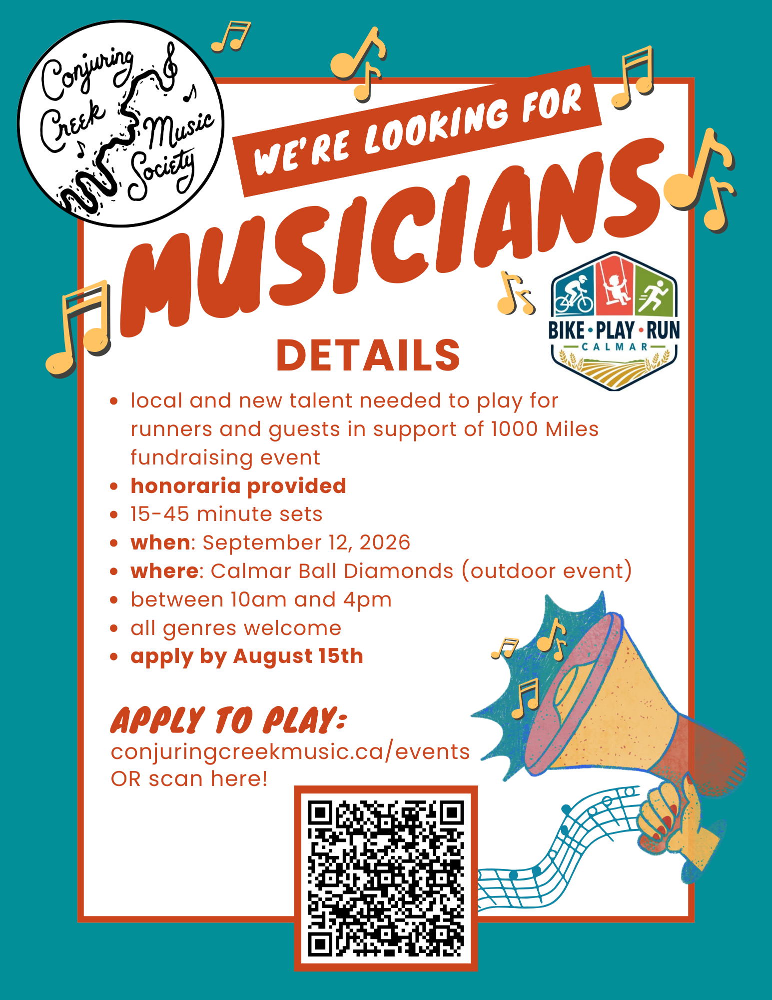

Are you a local musician looking for a place to showcase your skills?
Conjuring Creek Music Society is collaborating with Bike.Play.Run for the 1000 Miles fundraising event, and we need local and up-and-coming musicians to help us celebrate!
September 12, 2026 - 51 St, Calmar, Alberta, T0C 0V0
What is this?
This event is fundraising for a pump track in Calmar, and it's also a great community builder for the area. See more about the 1000 Miles event here. Conjuring Creek Music Society is helping out through hosting musical acts all day long to showcase local talent and entertain guests and runners.
Whether it's your first public performance or your 50th, all acts are welcome to apply. We would love to showcase a variety of genres and players.
What will the day look like?
There will be a small outdoor stage and performances will be mic'd and amplified. Sets will be 15 to 45 minutes long, anytime between 10am and 4pm. We will give you a time slot after August 15th when applications close. We will be there to help you set up and take down for your set. You will be playing for runners on the 1-mile track and other guests who are attending the event. There is a small beer gardens.
How do I apply to play?
Please apply through this google form before August 15th. Time slots and more information will be emailed to you after this date.
What do I need to bring?
Bring your instruments and anything else you need for your act. You can bring your own sound gear or use ours. If you'd like to use ours, we'll be in touch before the date to go over what you need.
Do I get paid?
There is an honorarium for all acts between $50 and $100 depending on act length and size.

If you have any questions, please email us at info[at]conjuringcreekmusic.ca.